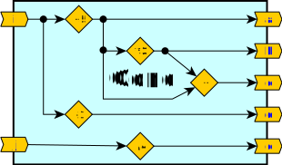

DFiant: First Look🔗
Your first encounter with the DFiant syntax, semantics and language features
In this section we provide simple examples to demonstrate various DFiant syntax, semantics and languages features. If you wish to understand how to run these examples yourself, please refer to the Getting Started chapter of this documentation.
Main Feature Overview🔗
- Concise and simple syntax
- Write portable code: target and timing agnostic dataflow hardware description
- Strong bit-accurate type-safety
- Simplified port connections
- Automatic latency path balancing
- Automatic/manual pipelining
- Meta hardware description via rich Scala language constructs
Basic Example: An Identity Function🔗
Let's begin with a basic example. The dataflow design ID has a signed 16-bit input port x and a signed 16-bit output port y. We implemented an identity function between the input and output, meaning that for an input series \(x_k\) the output series shall be \(y_k=x_k\). Fig. 1a depicts a functional drawing of the design and Fig. 1b contains five tabs: the ID.scala DFiant dataflow design ID class and its compiled RTL files in VHDL (v2008) and Verilog (v2001).

Fig. 1a: Functional drawing of the dataflow design 'ID' with an input port 'x' and an output port 'y'
1 2 3 4 5 6 7 | |
1 2 3 4 5 6 7 8 9 10 11 12 13 14 15 16 17 18 19 | |
1 2 3 4 5 6 7 8 9 10 11 12 13 14 15 16 17 18 19 20 21 22 23 24 25 26 27 28 29 30 31 32 33 34 35 36 37 38 39 40 41 42 43 44 45 46 47 48 49 50 51 52 53 54 55 56 57 58 59 60 61 62 63 64 65 66 67 68 69 | |
1 2 3 4 5 6 7 8 9 10 11 12 13 14 | |
1 2 3 | |
Fig. 1b: A DFiant implementation of the identity function as a toplevel design and the generated VHDL/Verilog files
The Scala code in Fig. 1b describes our ID design as a Scala class. To compile this further to RTL or simulate it we need to create a program that instantiates the class and invokes additional commands. See the getting started guide for further details.
Defining a new dataflow design
import DFiant._once per source file.@df class _design_name_ extends DFDesign {}to define your dataflow design. Populate your design with the required dataflow functionality.
ID.scala line-by-line breakdown
-
Line 1: The
import DFiant._statement summons all the DFiant classes, types and objects into the current scope. This is a must for every dataflow design source file. -
Lines 3-7: The
IDScalaclassis extended from theDFDesign(abstract) class and therefore declares it as a dataflow design. In addition, we also need to annotate the class with the@dfdataflow context annotation. This annotation provides animplicitcontext that is required for the DFiant compilation. In case this annotation is missing, you will get a missing context error. Note: currently in Scala 2.xx we populate a class within braces{}. For those of you who dislike braces, a braceless syntax is expected to be available in Scala 3, where DFiant will migrate to in the future.-
Lines 4-5: Here we construct the input port
xand output porty. Both were set as a 16-bit signed integer dataflow variable via theDFSInt(width)constructor, wherewidthis any positive integer. DFiant also support various types such asDFBits,DFUInt, andDFBool. All these dataflow variable construction options and more are discussed later in this documentation.
The syntaxval _name_ = _dftype_ <> _direction_is used to construct a port and give it a named Scala reference. The Scala reference name will affect the name of this port when compiled to the required backend representation. -
Line 6: The assignment operator
:=sets the dataflow output port to consume all input port tokens as they are.
-
ID RTL files observations
- The ID.vhdl/ID.v files are readable and maintain the names set in the DFiant design. The generated files follow various writing conventions such as lowercase keywords and proper code alignment.
- The ID_pkg.vhdl is a package file that is shared between all VHDL files generated by DFiant and contains common conversion functions that may be required. Additionally it may contain other definitions like enumeration types.
ID demo
import DFiant._
@df class ID extends DFDesign { //This our `ID` dataflow design
val x = DFSInt(16) <> IN //The input port is a signed 16-bit integer
val y = DFSInt(16) <> OUT //The output port is a signed 16-bit integer
y := x //trivial direct input-to-output assignment
}
object IDApp extends App {
import DFiant.compiler.backend.verilog.v2001
val id = new ID
id.compile.printGenFiles(colored = false)
}Hierarchy and Connection Example🔗
One of the most qualifying characteristics of hardware design is the composition of modules/entities via hierarchies and IO port connections. DFiant is no exception and easily enables dataflow design compositions. Fig. 2a demonstrates such a composition that creates yet another identity function, but this time as a chained composition of two identity function designs. The top-level design IDTop introduces two instances of ID we saw in the previous example and connects them accordingly.

Fig. 2a: Functional drawing of the dataflow design 'IDTop' with an input port 'x' and an output port 'y'
1 2 3 4 5 6 7 8 9 10 11 | |
1 2 3 4 5 6 7 8 9 10 11 12 13 14 15 16 17 18 19 20 21 22 23 24 25 26 27 28 29 30 31 32 33 | |
1 2 3 4 5 6 7 8 9 10 11 12 13 14 15 16 17 18 19 20 21 22 23 24 25 26 27 28 | |
Fig. 2b: A DFiant implementation of IDTop as a toplevel design and the generated VHDL/Verilog files
IDTop.scala observations
- Lines 6-7: Instantiating and naming the two internal
IDdesigns (by constructing a Scala class). - Lines 8-10: Connecting the design ports as can be seen in the functional diagram. The
<>connection operator is different than the:=assignment operator we saw earlier in several ways:- Directionality and Commutativity: The connection operation is commutative and the dataflow direction, from producer to consumer, is set according to the context in which it is used. Assignments always set the dataflow direction from right to left of the operator.
- Number of Applications: A connection to any bit can be made only once, while assignments are unlimited. Also, a bit cannot receive both a connection and an assignment.
- Initialization: A connection propagates initialization from the producer to the consumer if the consumer is not explicitly initialized (via
init). Assignments have no effect over initialization.
- Notice that connections can be made between sibling design ports as well as between parent ports to child ports.
- For more information access the connectivity section.
IDTop RTL files observations
- Unlike DFiant, RTLs do not support direct sibling module/component port connections and therefore require intermediate wires/signals to connect through. For consistency and brevity the DFiant backend compiler always creates signals for all ports of all modules and connects them accordingly.
IDTop demo
import DFiant._
@df class IDTop extends DFDesign { //This our `IDTop` dataflow design
val x = DFSInt(16) <> IN //The input port is a signed 16-bit integer
val y = DFSInt(16) <> OUT //The output port is a signed 16-bit integer
val id1 = new ID //First instance of the `ID` design
val id2 = new ID //Second instance of the `ID` design
id1.x <> x //Connecting parent input port to child input port
id1.y <> id2.x //Connecting sibling instance ports
id2.y <> y //Connecting parent output port to child output port
}
@df class ID extends DFDesign {
val x = DFSInt(16) <> IN
val y = DFSInt(16) <> OUT
y := x
}
object IDTopApp extends App {
import DFiant.compiler.backend.verilog.v2001
val idTop = new IDTop
idTop.compile.printGenFiles(colored = false)
}Concurrency Abstraction🔗
Concurrency and data scheduling abstractions rely heavily on language semantics. DFiant code is expressed in a sequential manner yet employs an asynchronous dataflow programming model to enable implicit and intuitive concurrent hardware description. This is achieved by setting the data scheduling order, or token-flow, according to the data dependency: all independent dataflow expressions are scheduled concurrently, while dependent operations are synthesized into a guarded FIFO-styled pipeline.

Fig. 4a: Functional drawing of the dataflow design 'Conc' with an input port 'x' and an output port 'y'
1 2 3 4 5 6 7 8 9 10 11 | |
1 2 3 4 5 6 7 8 9 10 11 12 13 14 15 16 17 18 19 20 21 22 23 24 25 26 27 28 | |
1 2 3 4 5 6 7 8 9 10 11 12 13 14 15 16 17 18 19 20 21 22 23 | |
Fig. 4b: A DFiant implementation of Conc as a toplevel design and the generated VHDL/Verilog files
Conc.scala observations
- Lines 6-7:
- For more information access the state section.
Conc RTL files observations
- Bla Bla
Conc demo
import DFiant._
@df class Conc extends DFDesign {
val i, j = DFUInt(32) <> IN
val a,b,c,d,e = DFUInt(32) <> OUT
a := i + 5
b := a * 3
c := a + b
d := i - 1
e := j / 4
}
object ConcApp extends App {
import DFiant.compiler.backend.verilog.v2001
val conc = new Conc
conc.compile.printGenFiles(colored = false)
}State Abstraction🔗
So far, all the examples were pure (stateless) functions, whereas frequently in hardware we need to express a state. A state is needed when a design must access (previous) values that are no longer (or never were) available on its input. DFiant assumes every dataflow variable is a token stream and provides constructs to initialize the token history via the init construct, reuse tokens via the .prev construct, and update the state via the assignment := construct.
Here we provide various implementations of a simple moving average (SMA); all have a 4-tap average window of a 16-bit integer input and output a 16-bit integer average. With regards to overflow avoidance and precision loss, DFiant is no different than any other HDL, and we took those into account when we selected our operators and declared the variable widths. Via the SMA examples we can differentiate between two kinds of state: a derived state, and a commit state.
Derived State SMA🔗
Derived State
A derived (feedforward) state is a state whose current output value is independent of its previous value. For example, checking if a dataflow stream value has changed requires reusing the previous token and comparing to the current token.
Trivial three-adder SMA implementation🔗
The trivial derived state SMA implementation comes from the basic SMA formula:
As can be seen from the formula, we need 3 state elements to match the maximum x history access. Fortunately, state creation is implicit in DFiant. Just by calling x.prev(_step_) to access the history of x we construct _step_ number of states and chain them, as can be seen in Fig. 3 (DFiant automatically merges the same states constructed from several calls).
Fig. 3a: Functional drawing of the dataflow design 'SMA_DS' with an input port 'x' and an output port 'y'
1 2 3 4 5 6 7 8 9 10 | |
1 2 3 4 5 6 7 8 9 10 11 12 13 14 15 16 17 18 19 20 21 22 23 24 25 26 27 28 29 30 31 32 33 34 35 36 37 38 39 40 41 42 43 44 45 46 | |
1 2 3 4 5 6 7 8 9 10 11 12 13 14 15 16 17 18 19 20 21 22 23 24 25 26 27 28 29 30 31 32 33 34 35 36 37 38 39 40 41 42 43 44 45 46 | |
Fig. 3b: A DFiant implementation of SMA_DS as a toplevel design and the generated VHDL/Verilog files
SMA_DS.scala observations
- Line 4: The SMA forumla defines the history of
xis at the start of the system (all values are considered to be0). We apply this information by initializing thexhistory viainit 0. - Lines 6-7: Accessing the history of
xis done via.prev(_step_), where_step_is a constant positive integer that defines the number of steps into history we require to retrieve the proper value. - Lines 6-8: To avoid overflow we chose the
+^carry-addition operator, meaning thats0ands2are 17-bit wide, andsumis 18-bit wide. - Line 9: The
sum/4division result keeps the LHS 18-bit width. To assign this value to the outputywhich is 16-bit wide, we must resize it first, via.resize. DFiant has strong bit-accurate type-safety, and it does not allow assigning a wider value to a narrower value without explicit resizing. In the following animated figure we show what happens if we did not resize the value.
The Scala presentation compiler is able to interact with the editor and a custom message is presented due to the DFiant type-safe checks. - The various dataflow type inference and operator safety rules are discussed at the type-system section.
- For more information on state and initialization access the this section.
SMA_DS RTL files observations
- This is often where a language like verilog falls short and relies on external linting
SMA_DS demo
import DFiant._
@df class SMA_DS extends DFDesign {
val x = DFSInt(16) <> IN init 0
val y = DFSInt(16) <> OUT
val s0 = x +^ x.prev
val s2 = x.prev(2) +^ x.prev(3)
val sum = s0 +^ s2
y := (sum / 4).resize(16)
}
object SMA_DSApp extends App {
import DFiant.compiler.backend.verilog.v2001
val sma = new SMA_DS
sma.compile.printGenFiles(colored = false)
}Two-adder SMA implementation🔗
The following algebraic manipulation reveals how we can achieve the same function with just two adders.
Instead of relying only on the history of x, we can utilize the history of s0 to produce s2. DFiant has time invariant history access through basic operators like addition, so (x +^ x.prev).prev(2) is equivalent to x.prev(2) +^ x.prev(3).

Fig. 4a: Functional drawing of the dataflow design 'SMA_DS2' with an input port 'x' and an output port 'y'
1 2 3 4 5 6 7 8 9 10 | |
1 2 3 4 5 6 7 8 9 10 11 12 13 14 15 16 17 18 19 20 21 22 23 24 25 26 27 28 29 30 31 32 33 34 35 36 37 38 39 40 41 42 43 44 | |
1 2 3 4 5 6 7 8 9 10 11 12 13 14 15 16 17 18 19 20 21 22 23 24 25 26 27 28 29 30 31 32 33 34 35 36 37 38 39 40 41 42 43 44 | |
Fig. 4b: A DFiant implementation of SMA_DS2 as a toplevel design and the generated VHDL/Verilog files
SMA_DS2.scala observations
- Lines 6-7:
- For more information access the state section.
SMA_DS2 RTL files observations
- Bla Bla
SMA_DS2 demo
import DFiant._
@df class SMA_DS2 extends DFDesign {
val x = DFSInt(16) <> IN init 0
val y = DFSInt(16) <> OUT
val s0 = x +^ x.prev
val s2 = s0.prev(2)
val sum = s0 +^ s2
y := (sum / 4).resize(16)
}
object SMA_DS2App extends App {
import DFiant.compiler.backend.verilog.v2001
val sma = new SMA_DS2
sma.compile.printGenFiles(colored = false)
}Commit State SMA🔗
Commit State
A commit (feedback) state is a state whose current output value is dependent on its previous state value. For example, a cumulative sum function output value is dependent on its previous sum output value.
1 2 3 4 5 6 7 8 9 | |
1 2 3 4 5 6 7 8 9 10 11 12 13 14 15 16 17 18 19 20 21 22 23 24 25 26 27 28 29 30 31 32 33 34 35 36 37 38 39 40 41 42 43 44 45 46 47 48 49 50 51 52 53 | |
1 2 3 4 5 6 7 8 9 10 11 12 13 14 15 16 17 18 19 20 21 22 23 24 25 26 27 28 29 30 31 32 33 34 35 36 37 38 39 40 41 42 43 44 45 46 47 48 49 50 51 52 53 | |
Finite Step (State) Machine (FSM) Example🔗
1 2 3 4 5 6 7 8 9 10 11 12 13 14 15 16 17 18 19 20 21 | |
1 2 3 4 5 6 7 8 9 10 11 12 13 14 15 16 17 18 19 20 21 22 23 24 25 26 27 28 29 30 31 32 33 34 35 36 37 38 39 40 41 42 43 44 45 46 47 48 49 50 51 52 53 54 55 56 57 58 59 60 61 62 63 64 65 66 67 68 69 70 71 72 73 74 75 76 77 | |
1 2 3 4 5 6 7 8 9 10 11 12 13 14 15 16 17 18 19 20 21 22 23 24 25 26 27 28 29 30 31 32 33 34 35 36 37 38 39 40 41 42 43 44 45 46 47 48 49 50 51 52 53 54 55 56 57 58 59 60 61 | |